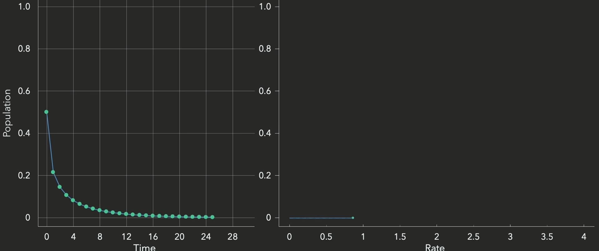
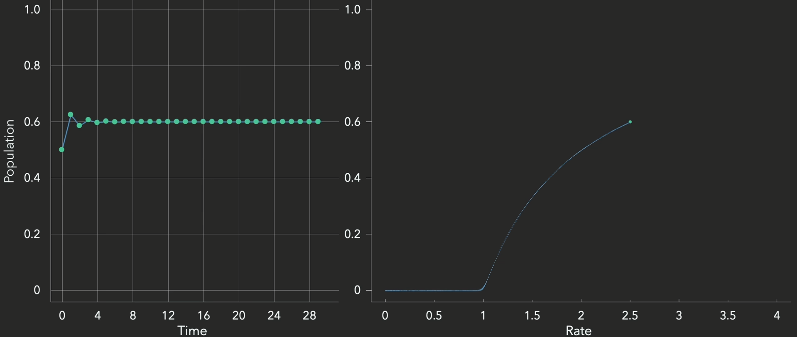
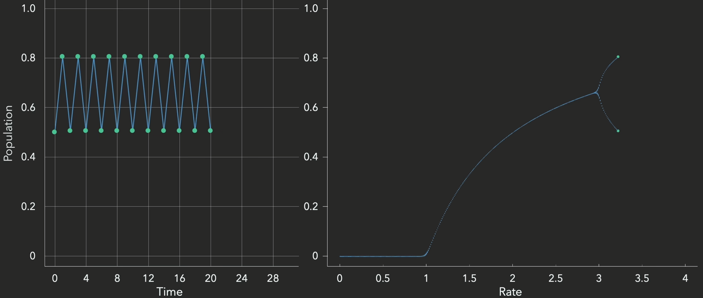
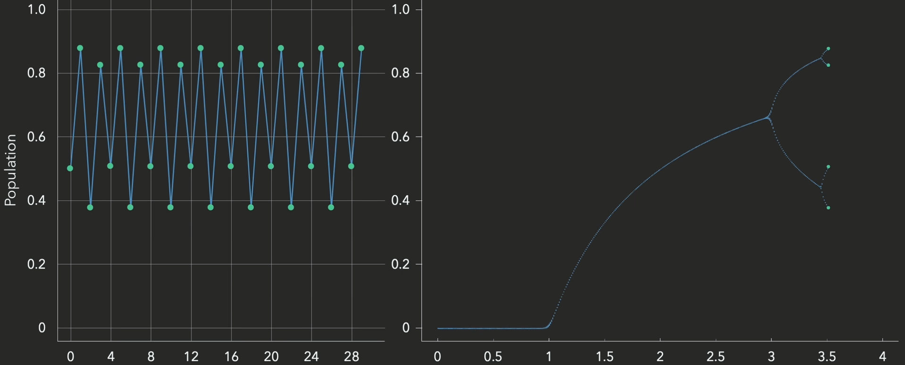
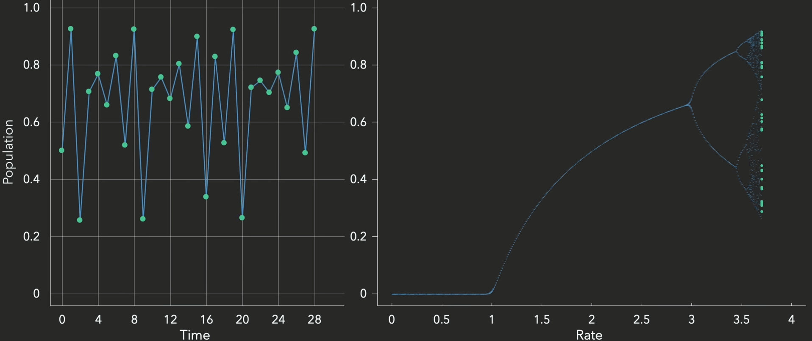

Double Pendulum
The double pendulum is a non-linear system consisting of two pendulums attached end to end. It exhibits chaotic behavior due to its sensitivity to initial conditions. Using the Lagrangian formulation in my code, I accurately simulated double pendulum dynamics to visualize the chaotic motion which stems from the rapid transfer of energy between the two pendulums.
Take a look at all the ball motion diagrams. Did you notice that all the middle balls (balls in between the two pendulums) make a perfect circular outline? This is because a single pendulum moves in sinusoidal, predictable motion. However, when looking at the second (lower) ball attached to the bottom of the second pendulum, the motion becomes chaotic and the balls have no correlation in their motion. This is the basis of non-linear motion and unpredictability.
Double pendulum simulation controls
Angle range: 100°–160°. Gravity range: 0.10–1.00.
Logistic Map
The logistic equation is a simple mathematical formula that models population growth change annually. Written as x_{n+1} = r x_n (1 - x_n), it demonstrates how small changes in the parameter r can lead to drastically different behaviors, including chaos.
This sequence of logistic maps illustrates the transition from stable behavior to chaos as the parameter r is increased. If you look closely, as the population growth factor "r" is increased, the population begins to switch back and forth between different values. As the growth factor continues to increase, the population exhibits further fluctuation, eventually reaching unpredictable population behavior.





- Parameter r controls the growth rate. Parameter X_n represents the population in the current generation, expressed as a fraction of the maximum possible carrying capacity (from 0 to 1). X_n+1 is the population in the next generation given n.
- For r < 1, the population is naturally shrinking and eventually approaching extinction.
- For 1 < r < 3, population grows smoothly until it reaches stable equilibrium.
- For 3 < r < 3.57, the population overshoots, then crashes, oscillating back and forth between two or more different population sizes in a stable cycle.
- For 3.57 < r < 4, reproduction rates become too high, population sizes fluctuate chaotically, and the system becomes unpredictable. This is the onset of chaos.